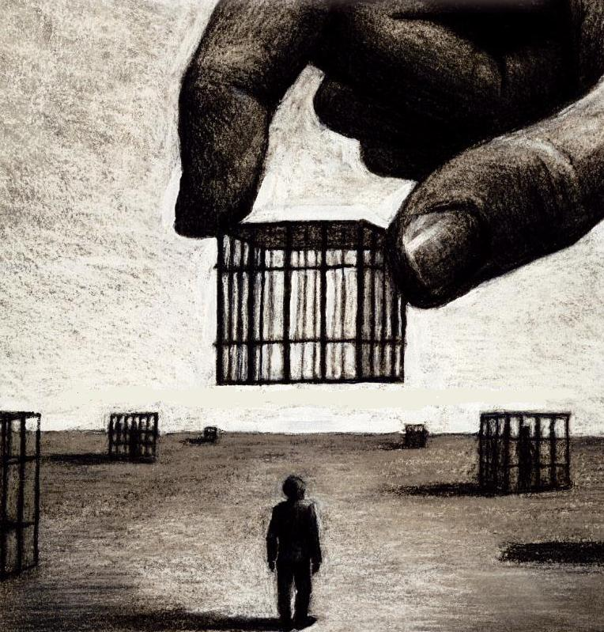

<!DOCTYPE html>
<html lang="pt-br"></html>
<head>
    <meta charset="UTF-8">
    <meta http-equiv="X-UA-Compatible" content="IE=edge">
    <meta name="viewport" content="width=device-width, initial-scale=1.0">
    <title>Brasil, que país é este?</title>
    <link rel="stylesheet" href="css/estilo.css">
</head>
<body background="imagens/fundo.png">
   
    <div id="pagina">
    <div id="menu">
        <a href="index.html">Introdução</a>&nbsp;|
        <a href="desigualdades.html" target="_self">Desigualdades</a>&nbsp;|
        <a href="falsaliberdade.html" target="_self">Falsa Liberdade</a>&nbsp;|
        <a href="músicasevideos.html" target="_self">Músicas e Vídeos</a>
   
    </div>
    <div class="cabecalho">
        
            </div>
            <div id="conteudo">
                <div id="principal">
                    <h3 style="color: #94FF29;">Falsa Liberdade</h3> <br>
                    <p>Vamos primeiro pensar sobre o conceito de liberdade: Segundo o Dicionário de Filosofia, em sentido geral, o termo liberdade é a condição daquele que é livre; capacidade de agir por si próprio; autodeterminação; independência; autonomia. Sem dimensão ética e social não há liberdade.
                    </p> <br>
                    <p>As pessoas dizem que são livres, mas se não seguirem as regras e leis, são punidas. 
                    </p> <br>
                    
                    <p>Existem vários tipos de falsa liberdade, só não paramos para pensar, como por exemplo:
                    </p> <br>
                    <p>“Você é lindo do jeito que você é, aceite-se.” Mas, se você for desse jeito, na maioria dos casos você não será escolhido. Esse padrão imposto pela sociedade, é uma forma de falsa liberdade, porque você deixa de ser quem você é, você troca sua liberdade de escolha e expressão para se encaixar naquele padrão.
                    </p> <br>
                    <p>A falsa liberdade negra também é algo a ser ressaltado. As pessoas negras foram “libertas” da escravidão. O que não é totalmente verdade, pois elas foram libertadas sem comida, dinheiro, casa, nada. Então elas tiveram que se submeter a escravidão para ter o básico do básico. E até hoje existem casos de escravização, pois muitas pessoas negras hoje em dia não são contratadas para vagas de emprego só pelo fato de elas serem negras.
                    </p> <br>
                    <p>Uma mulher pobre que é mãe da família, é “livre” para sair, trabalhar, fazer compras, etc. Mas sempre terá que chegar em casa e cuidar da casa e de seus filhos, estando aprisionada a esses deveres. </p>
                    <p>Uma pessoa é livre para ir e vir de onde e para onde ela quiser, mas ela não pode entrar num local chique por conta de suas vestimentas, por exemplo.
                    </p> <br>
                    <p>Bom, mas a falsa liberdade não tem só pontos negativos, por exemplo, se uma pessoa assassinar, estuprar, assediar, machucar, fazer qualquer outro tipo de violência tanto psicológica, física e moral, essa pessoa será punida, pois existem uma série de regras e leis que servem justamente para colocar uma ordem. 
                    </p> <br>
                    
                    <hr> <br>
                    <p>Como podemos ver, a população brasileira não é totalmente livre e muito menos igualitária, mas para trabalhar com um melhoramento, devemos visualizar primeiro nosso governo e nossa moral ética e social. </p> <br>

                    <h4 style="color:#94FF29;"> Referências</h4>
                    <ul>
                        <li><a href="https://brasilescola.uol.com.br/sociologia/consciencia-e-liberda-humana-texto-2.htm
                            ">Significado de Liberdade
                        </a></li> <br>
                        <li><a href="https://sol.sapo.pt/artigo/757553/a-falsa-liberdade#:~:text=Sem%20dimens%C3%A3o%20%C3%A9tica%20e%20social,%C3%B3dio%20pol%C3%ADtico%2C%20racial%20e%20religioso">Falsa Liberdade</a></li> <br>
                        
                    </ul>


                </div>
            </div>
                <div id="rodape">
                    <h4>&copy;GABRIELA REGINA MONÇÃO 1ºINFO_TURMA A<br></h4>
                </div>
    </div>
</body>
</html>